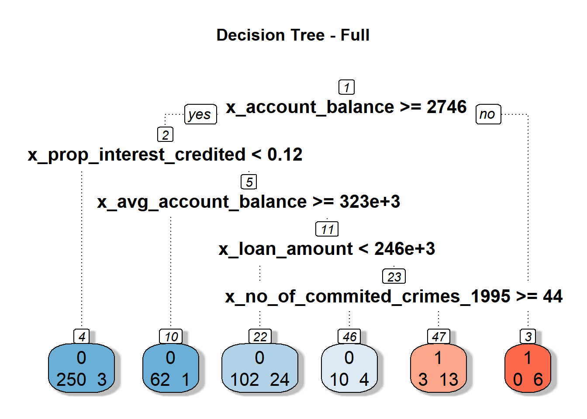
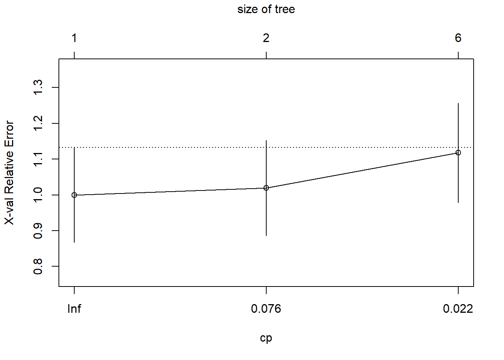
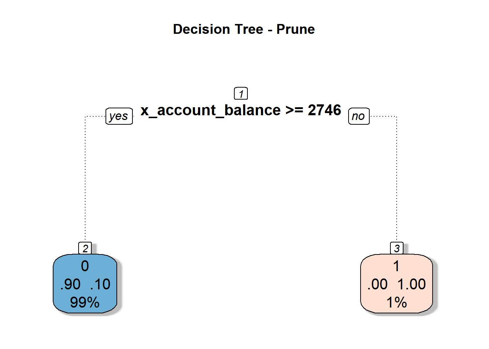
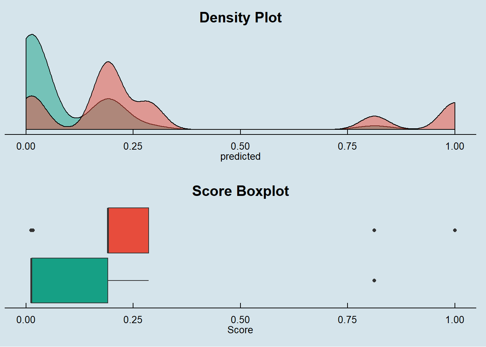
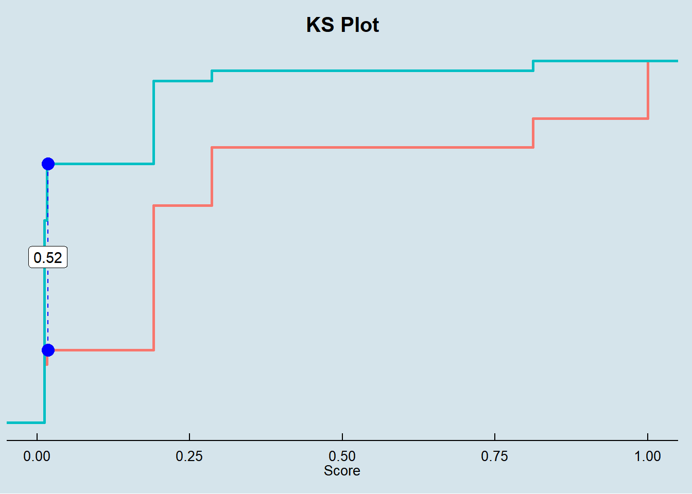

The goal of this session is trying to fit a simple Decision Tree model on Loan data aiming to predict the probability of delinquency for each contract.
Using the vanilla transaction dataset, we calculated several derived variables for each account as described in the Data Preparation session.
This dataset is joined with Loan, Client, Credit Card, District, Account and Account Balance tables.
We ended up having a data set with 118 variables.
| variables |
|---|
| y_loan_defaulter |
| x_account_balance |
| x_average_salary |
| x_avg_account_balance |
| x_card_age_month |
| x_card_type_classic |
| x_card_type_gold |
| x_card_type_junior |
| x_client_age |
| x_client_gender_male |
| x_district_name_Benesov |
| x_district_name_Beroun |
| x_district_name_Blansko |
| x_district_name_Breclav |
| x_district_name_Brno_mesto |
| x_district_name_Brno_venkov |
| x_district_name_Bruntal |
| x_district_name_Ceska_Lipa |
| x_district_name_Ceske_Budejovice |
| x_district_name_Cesky_Krumlov |
| x_district_name_Cheb |
| x_district_name_Chomutov |
| x_district_name_Chrudim |
| x_district_name_Decin |
| x_district_name_Domazlice |
| x_district_name_Frydek_Mistek |
| x_district_name_Havlickuv_Brod |
| x_district_name_Hl.m._Praha |
| x_district_name_Hodonin |
| x_district_name_Hradec_Kralove |
| x_district_name_Jablonec_n._Nisou |
| x_district_name_Jesenik |
| x_district_name_Jicin |
| x_district_name_Jihlava |
| x_district_name_Jindrichuv_Hradec |
| x_district_name_Karlovy_Vary |
| x_district_name_Karvina |
| x_district_name_Kladno |
| x_district_name_Klatovy |
| x_district_name_Kolin |
| x_district_name_Kromeriz |
| x_district_name_Kutna_Hora |
| x_district_name_Liberec |
| x_district_name_Litomerice |
| x_district_name_Louny |
| x_district_name_Melnik |
| x_district_name_Mlada_Boleslav |
| x_district_name_Most |
| x_district_name_Nachod |
| x_district_name_Novy_Jicin |
| x_district_name_Nymburk |
| x_district_name_Olomouc |
| x_district_name_Opava |
| x_district_name_Ostrava_mesto |
| x_district_name_Pardubice |
| x_district_name_Pelhrimov |
| x_district_name_Pisek |
| x_district_name_Plzen_jih |
| x_district_name_Plzen_mesto |
| x_district_name_Plzen_sever |
| x_district_name_Prachatice |
| x_district_name_Praha_vychod |
| x_district_name_Praha_zapad |
| x_district_name_Prerov |
| x_district_name_Pribram |
| x_district_name_Prostejov |
| x_district_name_Rakovnik |
| x_district_name_Rokycany |
| x_district_name_Rychnov_nad_Kneznou |
| x_district_name_Semily |
| x_district_name_Strakonice |
| x_district_name_Sumperk |
| x_district_name_Svitavy |
| x_district_name_Tabor |
| x_district_name_Tachov |
| x_district_name_Teplice |
| x_district_name_Trebic |
| x_district_name_Trutnov |
| x_district_name_Uherske_Hradiste |
| x_district_name_Usti_nad_Labem |
| x_district_name_Usti_nad_Orlici |
| x_district_name_Vsetin |
| x_district_name_Vyskov |
| x_district_name_Zdar_nad_Sazavou |
| x_district_name_Zlin |
| x_district_name_Znojmo |
| x_last_transaction_age_days |
| x_loan_amount |
| x_loan_duration |
| x_loan_payments |
| x_no_of_cities |
| x_no_of_commited_crimes_1995 |
| x_no_of_commited_crimes_1996 |
| x_no_of_enterpreneurs_per_1000_inhabitants |
| x_no_of_inhabitants |
| x_no_of_municip_2000_to_9999 |
| x_no_of_municip_500_to_1999 |
| x_no_of_municip_greater_10000 |
| x_no_of_municip_inhabitants_less_499 |
| x_prop_household |
| x_prop_insurance_payment |
| x_prop_interest_credited |
| x_prop_loan_payment |
| x_prop_old_age_pension |
| x_prop_other |
| x_prop_statement |
| x_ratio_of_urban_inhabitants |
| x_region_central_Bohemia |
| x_region_east_Bohemia |
| x_region_north_Bohemia |
| x_region_north_Moravia |
| x_region_Prague |
| x_region_south_Bohemia |
| x_region_south_Moravia |
| x_transaction_amount |
| x_transaction_count |
| x_unemploymant_rate_1995 |
| x_unemploymant_rate_1996 |
One advantage of Decision Tree models is that it does not require heavy feature engineering.
We will only remove x_prop_old_age_pension that we know beforehand to have no variance in the dataset.
This model is also not sensible to outliers, missing values and multicollinearity.
The available data in Loan Dataset is split into Train and Testing data on the following proportion:
We are selecting exact the same samples we used for the Logistic Model to allow comparison across models.
SplitDataset <- source_train_test_dataset
data.train_DT <- SplitDataset$data.train
data.test_DT <- SplitDataset$data.test
data.train_DT <- dplyr::select(data.train_DT, names(loan_dataset_DT))
data.test_DT <- dplyr::select(data.test_DT, names(loan_dataset_DT))
kable(SplitDataset$event.proportion)| scope | 0 | 1 |
|---|---|---|
| full dataset | 0.8885630 | 0.1114370 |
| train dataset | 0.8933054 | 0.1066946 |
| test dataset | 0.8774510 | 0.1225490 |
Both datasets keep the same proportion for the explained variable around 11%.
With the final cleaned dataset, we got from above steps we fit our Decision Tree Model for y_loan_defaulter on all x variables.
We choose to change the default parameters minbucket and maxdepth parameter to 5 to deliberate create a fully-grown tree as the database is not big enough for this model.
tree.full <- rpart(data= data.train_DT, y_loan_defaulter ~ .,
control = rpart.control(minbucket = 5,
maxdepth = 5),
method = "class")
rpart.plot(tree.full, cex = 1.3, type = 0,
extra = 1, box.palette = 'BuRd',
branch.lty = 3, shadow.col = 'gray',
nn = TRUE, main = 'Decision Tree - Full')
Pruning is a technique in machine learning used to reduce the size of decision trees by removing nodes that provide little power of classification.
The idea is reducing the complexity of the decision tree and thereof avoid overfit to the train dataset.
Pruning process is done by comparing different variations of the fully-grown tree and evaluating the relative error trend comparing to a zero node tree, each node that does not affect the classification power of the tree is replaced by a leaf node.
##
## Classification tree:
## rpart(formula = y_loan_defaulter ~ ., data = data.train_DT, method = "class",
## control = rpart.control(minbucket = 5, maxdepth = 5))
##
## Variables actually used in tree construction:
## [1] x_account_balance x_avg_account_balance
## [3] x_loan_amount x_no_of_commited_crimes_1995
## [5] x_prop_interest_credited
##
## Root node error: 51/478 = 0.10669
##
## n= 478
##
## CP nsplit rel error xerror xstd
## 1 0.11765 0 1.00000 1.0000 0.13235
## 2 0.04902 1 0.88235 1.0000 0.13235
## 3 0.01000 5 0.68627 1.2549 0.14598
cp_prune = tree.full$cptable[which.min(tree.full$cptable[,"xerror"]), "CP"]
tree.prune <- prune(tree.full, cp = cp_prune)
rpart.plot(tree.prune, cex = 1.3, type = 0,
extra = 1, box.palette = 'BuRd',
branch.lty = 3, shadow.col = 'gray',
nn = TRUE, main = 'Decision Tree - Prune')
On performing the pruning process in our decision tree, we end up with a tree with only one node split. This is because splitting the train data set of just one node provide an overall accuracy greater than any other combination.
Here the technique falls short for this dataset, we would be interest in give a greater weight on correctly predict the real defaulters than the general accuracy of the model.
A Decision Tree is definitely not a good model for this dataset, but as we are just exercising the modeling technique (just having fun here !!!) we will use the full decision tree we got to compare its metrics and see how it perform against the other models we created in this class exercise.
We tried different parameters for minbucket and maxdepth, as our dataset is not big enough all of then presented huge differences in performance, the one we chose for this exercise seems to be a reasonable trade-off on overfitting to compare against the other models.
We can do this by simply feeding back the full tree to our prune tree object and move on to the performance metrics.
Decision Trees are known by its very descriptive rules on how it is classifying each observation. It provides a very clear human readable set of rules that can show the importance of each variable on the decision process.
Our full decision tree model clear shows that below variables are the key features that can be used to decide the likelihood of default in each contract:
The result is similar to the Logistic Regression model we created in the session before.
The predictors selected are roughly the same.
Here we will perform basically the same steps we did in the Logistic Regression model.
A comparison against all the models will be provided in the Final Report session of this exercise.
We started this step by making predictions using our model on the X’s variables in our Train and Test datasets.
## making preditions for each model and consolidating in a single data frame
prob.full = list()
prob.train = list()
prob.test = list()
prob.full$decision.tree.actual <- loan_dataset_DT$y_loan_defaulter
prob.full$decision.tree.predicted <- predict(tree.prune, type = "prob", newdata = loan_dataset_DT)[, 2]
prob.train$decision.tree.actual <- data.train_DT$y_loan_defaulter
prob.train$decision.tree.predicted <- predict(tree.prune, type = "prob", newdata = data.train_DT)[, 2]
prob.test$decision.tree.actual <- data.test_DT$y_loan_defaulter
prob.test$decision.tree.predicted <- predict(tree.prune, type = "prob", newdata = data.test_DT)[, 2]
prob.full <- prob.full %>% as_tibble()
prob.train <- prob.train %>% as_tibble()
prob.test <- prob.test %>% as_tibble()To calculate the performance measures, derived from the confusion matrix, we need to find the score cut off that best split our test dataset into Defaulters and Non-Defaulters.
In this exercise we decide to not prioritize the accuracy on predicting Defaulters and Non-Defaulters, therefore we are looking for the score cut off that best predict each class equally.
With the returned object from this function we can plot the comparison between TPR (True Positive Rate) and TNR (True Negative Rate) to find the best cut off.
## getting measures -----------------------------------------------------------------
metricsByCutoff.test_DT <- modelMetrics(prob.test$decision.tree.actual,
prob.test$decision.tree.predicted,
plot_title = 'Decision Tree')
metricsByCutoff.test_DT$PlotWith the optimized cut off we calculate the full set of model metrics using the function HMeasure from hmeasure library.
# decision tree
measures.decision.tree.train <- HMeasure(prob.train$decision.tree.actual,
prob.train$decision.tree.predicted,
threshold = metricsByCutoff.test_DT$BestCut['Cut'])
measures.decision.tree.test <- HMeasure(prob.test$decision.tree.actual,
prob.test$decision.tree.predicted,
threshold = metricsByCutoff.test_DT$BestCut['Cut'])
# join measures in a single data frame
measures <- t(bind_rows(measures.decision.tree.train$metrics,
measures.decision.tree.test$metrics
)) %>% as_tibble(., rownames = NA)
colnames(measures) <- c('decision.tree - train', 'decision.tree - test')
measures$metric = rownames(measures)
measures <- dplyr::select(measures, metric, everything())Below are the metrics on the train and test dataset:
| metric | decision.tree - train | decision.tree - test |
|---|---|---|
| H | 0.4815174 | 0.3299682 |
| Gini | 0.7575883 | 0.5883799 |
| AUC | 0.8787941 | 0.7941899 |
| AUCH | 0.8787941 | 0.7966480 |
| KS | 0.6522478 | 0.5150838 |
| MER | 0.0732218 | 0.1029412 |
| MWL | 0.0662891 | 0.1042868 |
| Spec.Sens95 | 0.0878220 | 0.3840782 |
| Sens.Spec95 | 0.8830450 | 0.2736000 |
| ER | 0.2489540 | 0.2745098 |
| Sens | 0.9215686 | 0.8000000 |
| Spec | 0.7306792 | 0.7150838 |
| Precision | 0.2901235 | 0.2816901 |
| Recall | 0.9215686 | 0.8000000 |
| TPR | 0.9215686 | 0.8000000 |
| FPR | 0.2693208 | 0.2849162 |
| F | 0.4413146 | 0.4166667 |
| Youden | 0.6522478 | 0.5150838 |
| TP | 47.0000000 | 20.0000000 |
| FP | 115.0000000 | 51.0000000 |
| TN | 312.0000000 | 128.0000000 |
| FN | 4.0000000 | 5.0000000 |
In general, such as the Logistic Regression model, this model is not delivering good accuracy, we will compare how it performed against other classes of models in the Final Report session
Below the confusion matrix and general performance of the model:
# accuracy metrics ---------------------------------------------------------------
# logistic regression
accuracy(score = prob.test$decision.tree.predicted,
actual = prob.test$decision.tree.actual,
threshold = metricsByCutoff.test_DT[["BestCut"]][["Cut"]])##
##
## pred.1 pred.0
## --------- ------- -------
## actual.1 20 5
## actual.0 51 128
## [1] "--------------------------------------------------------------"
## [1] "Model General Accuracy of: 72.55%"
## [1] "True Positive Rate of : 80%"We finally look at the score distribution charts to check how well the model is able to discriminate Defaulters and Non-Defaulters.
p1 <- Score_Histograms(prob.test,
prob.test$decision.tree.predicted,
prob.test$decision.tree.actual,
'Density Plot') + theme(axis.title.y = element_blank())
p2 <- Score_Boxplot(prob.test,
prob.test$decision.tree.predicted,
prob.test$decision.tree.actual,
'Score Boxplot')
p3 <- KS_Plot(prob.test$decision.tree.predicted[prob.test$decision.tree.actual == 0],
prob.test$decision.tree.predicted[prob.test$decision.tree.actual == 1],
'KS Plot') + theme(axis.title.y = element_blank(),
axis.text.y = element_blank())
ggarrange(p1, p2, nrow = 2)

By the score density we see that our Decision Tree is very narrow on the scores it assigns to the observations.
This is expected from single Decision Trees.
The box plot also does not show a clear discrimination between Defaulters and Non-Defaulters.
Finally, the KS metric is far from what is expected for a reasonable classification model.
In the Final Report session, we will look more closely on the AUC and Gini metrics by plotting the ROC curve and comparing against other models.
Stay tuned!!!